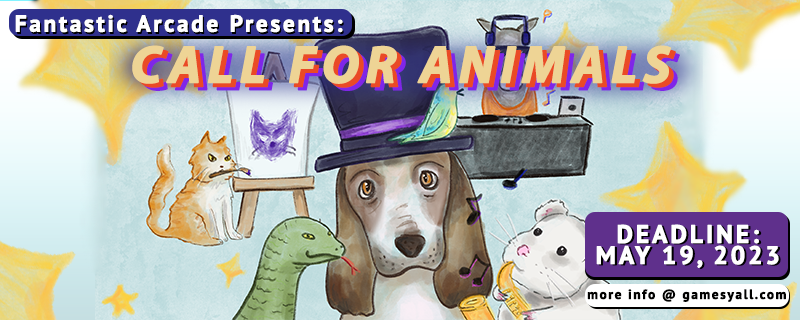

-
Me & My Animal Friend
May 27th, 2023 - 7-11pm
The Museum of Human Achievement, 3600 Lyons Road, Austin, TX 78702
Showcase your pet's talents with us! Let's celebrate friendship!
🦅Calling Animal Friends!🦅
We are seeking Pet Talent for the return of Me & My Animal Friend, a pet talent and stage show presented by the Museum of Human Achievement. We are seeking contestants that can either do a live stage show presentation or a pre-recorded reel featuring your pets talent. Got a Dancing Dog? A Cat Detective? A high stakes Poker Playing Toad? All animals are welcome! Anthropomorphic objects & human-human/animal friends are also accepted!
Open Call Deadline: May 19th, 2023
Event Time & Date: May 27th, 2023 7-11pm
Location: Museum of Human Achievement
Seeking submissions from: Austin, Texas & Beyond
______________________________________________________
Disclaimer: This show is meant to be a fun and silly environment for humans to showcase themselves and their animal friends. Participants should be aware that we will try our best to accommodate, however there will be an audience and some of the things that go along with that (applause, general excitement, lights) We in no way want to cause any animals or people discomfort, fear or general un-happiness, therefore please keep this in mind if submitting. We think there are probably some great animal friends that would like (or be indifferent) to a moment in the spotlight, but want to make sure any participants meet the following criteria:
*Animal and owner are good friends. There is mutual respect, understanding, and solid relationship with the human and their animal friend.
*Your pet won't be uncomfortable or leave with un-due stress while sharing a moment in the spotlight (we will have a quiet room where owners and their animal friend can wait before the show and move to after... we expect the whole on stage thing to last 3-5 minutes) If your pet is small and prefers not to leave their container/home, we can provide a small camera which can be projected onto a screen so the audience would be able to see without getting close.
*Your pet was acquired under thoughtful conditions (we're not trying to promote or condone any systems of animal cruelty or illegal acquisition of pets).
Venue + COVID Details
This event will indoors and outdoors. There is a large parking lot and street parking available.
We strongly encourage that everyone be vaccinated or have recently tested negative for COVID. Do not attend if you are experiencing symptoms. Masks are welcome! Hand sanitizer and wipes for controllers will be available.
Games Y'all
Games Y’all is a monthly meetup presented by Fantastic Arcade for indie devs, digital artists, and games fans. We showcase indie games and digital art projects from our local community and beyond. You can come to our meetups to play games, experience digital art, and connect with the local Austin games community.
Fantastic Arcade
Fantastic Arcade celebrates, amplifies, and supports the unique and underrepresented within indie games and beyond.
Join the Community


Website created by Noah V. Carrico